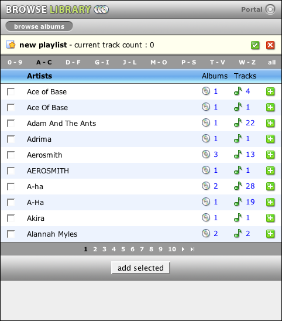
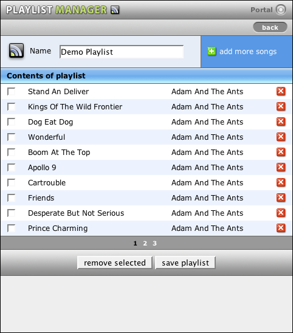
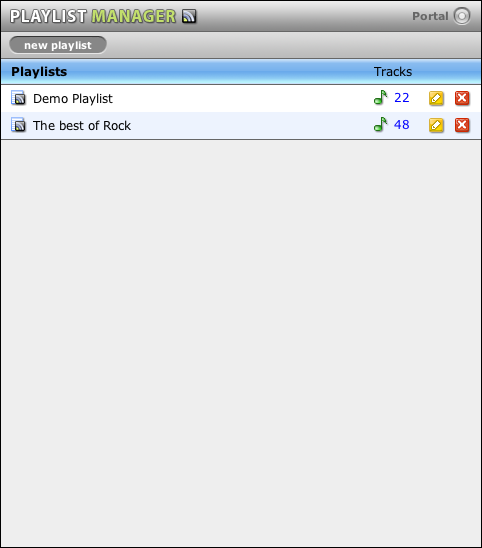

MyTunesRSS playlists
With MyTunesRSS you can create your own playlists in addition to using iTunes playlists. To start a new playlist, click the link "new playlist" in either the playlist manager, the album or artist browser or the track list. You get into the playlist mode which adds a yellow section above the portal and list pages. This section shows the name of the current playlist and the track count. A new playlist has no name. The following screenshot shows the playlist mode in the artist browser.
In this mode the list views change. You cannot create M3U playlists and RSS feeds but you cann add all tracks of an album, an artist or arbitrary selections to the playlist. Use either the plus-icon at the end of each row or check some items and use the button below the list. The track count is automatically adjusted. You cannot add double tracks. The checkbox left to the title selects all items of the current page.
When you have finished adding tracks to the playlist, click the green icon at the right end of the yellow section. It will take you to the playlist editor page. The red X discards the playlist without saving. On the editor page you can specify the name of the playlist, remove tracks and save the playlist. You can also leave the page with the link in the upper right corner and continue adding tracks. The cancel button at the lower right is available only when you are editing an existing playlist. In this case all changes are discarded.
You can get from the portal to the playlist manager. On this page you can edit your existing MyTunesRSS playlists and remove them. Editing a list takes you to the playlist editor as described above. A click on the track count display the tracks of the playlist.
